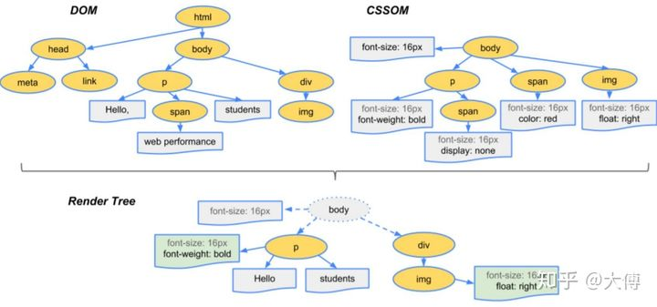
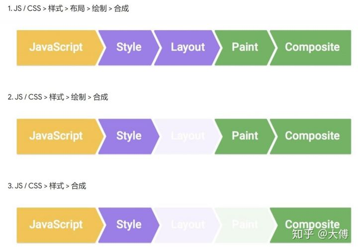

一、浏览器渲染原理
浏览器渲染过程：
- 根据HTML构建HTML树(DOM)
- 根据CSS构建CSS树(CSSOM)
- 将两棵树合并成一颗渲染树(render tree)
- Layout布局(文档流、盒模型、计算大小和位置
- Paint绘制(把边框颜色、文字颜色、阴影等画出来
- Compose合成(根据层叠关系展示画面)
-
三棵树：
 -
三种更新方式：

transition 只能做单个动作，如果动画包含多个动作，这时候就需要 animation
两个连续的线段有三个关键点，两个连续的动作必然也有三个关键帧（keyframe）。